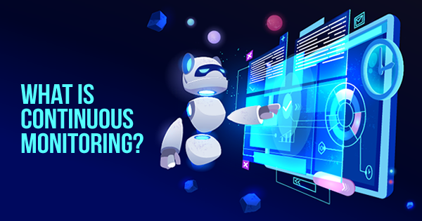

Monitoring is a well overlooked area of devops. DevOps requires data, and lots of it. Measuring everything from the system, quality of services uptimes, customer satisfaction and more. In order to collect all this data it's important to put in the tools to monitor and alert on data. (automation helps a lot here). In devops without monitoring you don't have the capability to be proactive or understand problems before they happen.